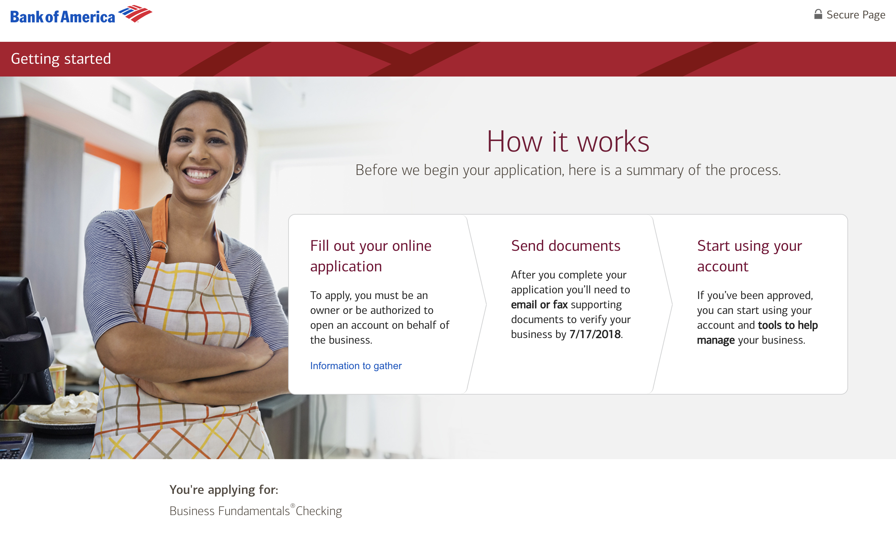
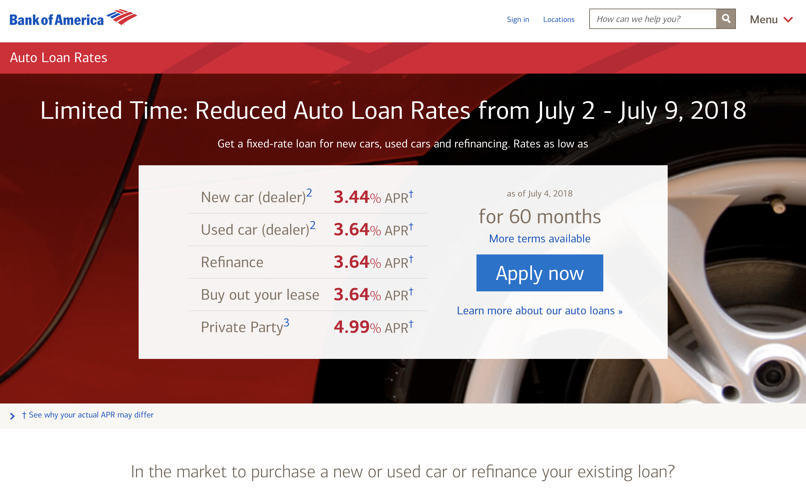

<div class="modal fade" id="bofa-modal" tabindex="-1" role="dialog" aria-labelledby="myModalLabel" aria-hidden="true">
    <div class="modal-dialog modal-lg">
        <div class="modal-content">
            <div class="modal-header">
                <button type="button" class="close" data-dismiss="modal">
                    <span aria-hidden="true">&times;</span>
                    <span class="sr-only">Close</span>
                </button>
                <h4 class="modal-title" id="myModalLabel">Bank of America</h4>
            </div>
            <div class="modal-body">
                <ul class="list-inline banner-social-buttons">
                    <li data-replace="contact-link"></li>
                    <li>
                        <a href="https://www.bankofamerica.com/deposits/checking/personal-checking-account/" class="btn btn-default btn-lg">
                            <i class="fa fa-github fa-fw"></i>
                            <span class="network-name">Live Site</span>
                        </a>
                    </li>
                </ul>
                <p>I built reusable components that are shared across all digital sales sites. Things like focus management utilities for screen readers, input validation and formatting that actually works properly with android keyboards, a reusable template library that made rapid page deployment much easier, and updates to accordions, headers, navigation, messaging, and more. These is a massive amount of code for all the product lines, but some of what I did shows up on all all of them, or will once the updated page is released.</p>
                <p>The small business application was one of the first responsive rebuilds of an application flow that I architected. When I started at the bank I was on the deposits team, so most checking and savings accounts came across my desk.</p>
                <p>For this application flow, I utilized redux and handlebars for our state management and rendering complextity as the user moves through the application process. There is a variable amount of pages each with dynamic content based on previous selections.</p>
                
                <p>The research (non application) pages were largely what I worked on before I moved over to macro level work on shared components.</p>
                
                <p>The work I have done has made it on to nearly every responsive product page, and the effort to convert legacy pages into the new reponsive format is ongoing. It's pretty rad knowing that a few million people have interacted with things that you made.</p>
                
                <ul class="list-inline banner-social-buttons">
                    <li data-replace="contact-link"></li>
                    <li>
                        <a href="https://www.bankofamerica.com/smallbusiness/business-financing/auto-loans/" class="btn btn-default btn-lg">
                            <i class="fa fa-github fa-fw"></i>
                            <span class="network-name">Live Site</span>
                        </a>
                    </li>
                </ul>
            </div>
            <div class="modal-footer"></div>
        </div>
    </div>
</div>